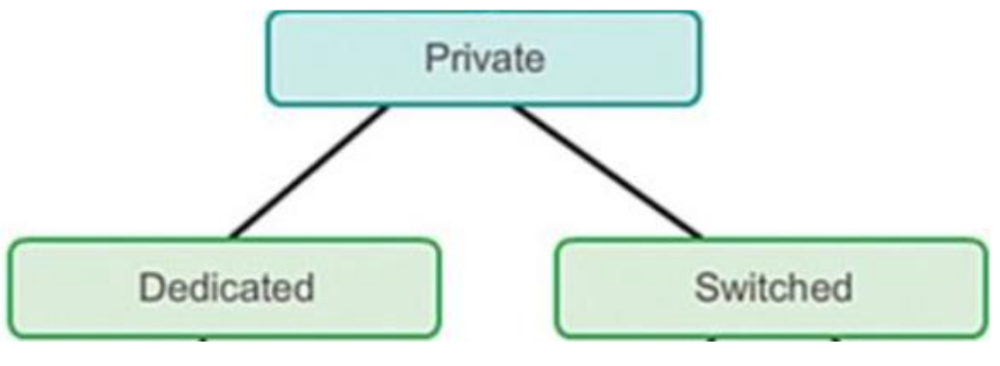
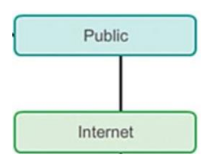
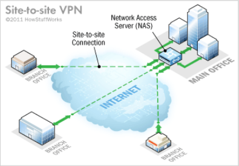
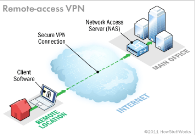
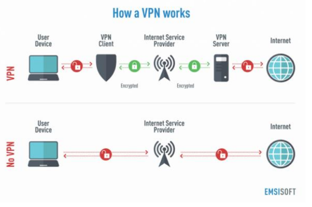
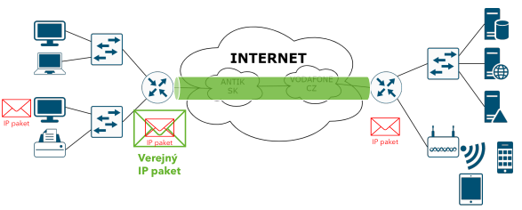

Virtuálne privátne siete (VPN)
Krátka história
- Firmy často riešia potrebu prepojiť svoje lokality, napríklad pobočky s centrálou, prostredníctvom počítačovej siete.
- Mohli si vybrať z viacerých možností podľa toho, akú úroveň bezpečnosti chceli dosiahnuť a koľko financií boli ochotné zaplatiť.
- S masívnym rozvojom internetu začalo čoraz viac firiem využívať technológiu virtuálnych privátnych sietí (VPN).
Možnosti pripojenia do WAN (privátne)
Dedikované privátne linky
- Zákazník si prenajme alebo zakúpi vlastný komunikačný okruh, napríklad optické vlákno, od telekomunikačnej spoločnosti.
- Dáta zákazníka nevidí nikto iný, pretože idú len po jeho vlastnej sieti.
- Veľmi bezpečné, ale veľmi drahé riešenie.
Prepínané privátne linky
- Zákazník si zaplatí za vstup do siete telekomunikačného operátora, pričom prenos dát sa prenáša cez trvalo alebo dočasne vytvorené okruhy.
- Dáta zákazníka sú len v sieti jedného operátora a operátor zabezpečuje, aby si rôzni zákazníci navzájom nevideli do svojich dát.
- Bezpečné za stredne vysokú cenu.

Možnosti pripojenia do WAN - verejné
- Dáta zákazníka putujú cez verejnú sieť Internet, kde si ich odovzdávajú rôzne telekomunikačné spoločnosti (ISP).
- ISP negarantuje bezpečnosť prenášaných dát mimo svojej siete, preto si zákazník musí zabezpečiť dáta vo vlastnej réžii.
- Táto možnosť je najlacnejšia, najmenej bezpečná a vyžaduje si najväčšiu mieru konfigurácie na strane zákazníka.

Ako funguje VPN?
- VPN vznikla ako spôsob, ako dosiahnuť bezpečnosť privátnych sietí za cenu pripojenia do verejnej siete.
- Cieľom je vytvoriť zdanie privátnej siete, ale pritom prenášať dáta cez verejný internet.
Poznáme 2 základné typy VPN:
- Site-to-site → prepojenie dvoch lokalít
- Remote access → pripojenie koncového používateľa do vzdialenej siete
Site-to-site VPN
- Je to typ VPN, ktorý prepája dve lokality tak, že sa vytvorí šifrované spojenie medzi routrami, ktorými sa tieto lokality pripájajú do internetu.
- Celá konfigurácia je implementovaná na routroch.

Remote-access VPN
- Je to typ VPN, ktorý prepája koncového používateľa s inou sieťou, napríklad v práci alebo škole.
- Pracovník na home-office môže pomocou takejto VPN pracovať vo firemnej sieti rovnako, ako keby sedel za svojím stolom v práci.
- Časť konfigurácie je implementovaná na routri a časť na zariadení klienta (PC, smartfón), ktorý potrebuje na pripojenie špeciálny softvér.

Akú VPN používam v smartfóne alebo počítači?
- Smartfón alebo počítač je koncové zariadenie, preto používa typ Remote-access VPN.
- Pomocou špeciálneho softvéru sa pripojí do siete poskytovateľa VPN služby a ďalšia komunikácia ide cez VPN providera na server služby, ktorú chceme využívať.
- Do bežnej komunikácie sa teda vloží ešte jeden prvok – VPN provider.

Čo umožňuje VPN?
- Zachovanie anonymity – koncová služba nepozná moju skutočnú IP adresu ani poskytovateľa internetu.
- Zachovanie súkromia – komunikácia je na zariadení zašifrovaná, takže ju nevie prečítať ISP, vláda ani prípadný útočník.
- Ochranu proti malvéru – VPN klient môže používať DNS server od VPN providera namiesto DNS servera nastaveného v operačnom systéme.
Môžem prenášať webstránky alebo hrať hry cez VPN?
- Mnoho programov potrebuje klasickú sieťovú infraštruktúru, aby mohli fungovať.
- To zahŕňa schopnosť práce s IP paketmi, TCP/UDP segmentmi a podobne.
- Aby tieto programy mohli fungovať aj vo VPN, stačí na úrovni operačného systému zabezpečiť vytvorenie sieťového tunela.
Sieťový tunel
- Sieťový tunel je spôsob, pri ktorom sa pôvodné dáta zapuzdria do ďalšieho paketu a prenesú cez inú sieť.
- Vďaka tomu môže komunikácia vyzerať, akoby išla cez privátnu sieť, aj keď v skutočnosti ide cez internet.

Príklad vytvorenia sieťového tunela – GRE
- GRE (Generic Routing Encapsulation) je protokol, ktorý môže fungovať na L3 alebo na L2.
- Na L3 zapuzdruje IP paket do iného IP paketu, na L2 zapuzdruje rámec do iného rámca.
- GRE sám o sebe nešifruje, iba enkapsuluje dáta, preto cez neho nevzniká privátna, ale len virtuálna sieť.
Ako prebieha vytvorenie VPN spojenia?
- Používateľ iniciuje spustenie pripojenia na VPN server cez funkciu operačného systému alebo špeciálny program.
- Používateľ sa autentifikuje voči VPN serveru menom a heslom alebo asymetrickou kryptografiou.
- Server overí používateľa a pošle mu sieťové nastavenia, napríklad DNS, gateway a smerovacie tabuľky.
- Server si s klientom dohodne šifrovacie parametre a vytvorí sa sieťový tunel, cez ktorý prebieha komunikácia šifrovane.
VPN protokoly
Na pripojenie do VPN sa používajú rôzne VPN protokoly ako:
- PPTP
- L2TP + IPSec
- SSTP
- OpenVPN
- IKEv2 + IPSec
- WireGuard
PPTP
- Najstarší tunelovací protokol, ktorý sa objavil už vo Windows 95.
- Overuje používateľov cez meno a heslo.
- Používa 128-bitové RC4 šifrovanie, ktoré už bolo prelomené.
- Výhody: veľmi rýchly, ľahko sa nastavuje, má širokú podporu v systémoch.
- Nevýhody: slabé šifrovanie, ľahko sa blokuje a zle pracuje na nestabilných sieťach.
L2TP + IPSec
- L2TP je protokol, ktorý vylepšuje PPTP.
- Overuje používateľov cez meno a heslo alebo cez certifikát.
- Sám o sebe nešifruje, preto sa kombinuje s IPSec.
- Výhody: bezpečnejší ako PPTP, ľahko sa nastavuje, má dobrý výkon aj na nestabilných sieťach.
- Nevýhody: pomalší ako PPTP a dá sa ľahšie blokovať.
Šifrovanie – IPSec
- IPSec sa používa na zabezpečenie šifrovaného spojenia na L3 vrstve.
- Šifruje celý pôvodný IP paket, overuje integritu dát a autenticitu komunikujúcich strán.
Hlavné komponenty IPSec:
- IPSec IKE – komponent pre výmenu šifrovacích kľúčov.
- IPSec AH – zabezpečuje potvrdenie autenticity a overenie integrity, ale nešifruje dáta.
- IPSec ESP – zabezpečuje autenticitu, integritu aj samotné šifrovanie dát.
SSTP
- Protokol vyvinutý Microsoftom ako lepšia náhrada PPTP.
- Overuje používateľov cez meno a heslo alebo cez certifikát.
- Na šifrovanie využíva SSL s 256-bitovým kľúčom.
- Výhody: dobré šifrovanie, dobrá podpora v Microsoft produktoch, dobre prechádza cez firewally.
- Nevýhody: proprietárny produkt Microsoftu a otázne súkromie.
OpenVPN
- Open-source VPN protokol, ktorý je dnes štandardom v priemysle.
- Overuje používateľov cez meno a heslo alebo cez certifikát.
- Využíva rôzne šifrovacie a overovacie algoritmy podľa konfigurácie servera.
- Výhody: výborné šifrovanie, široká kompatibilita, dobre prechádza cez firewally, je rýchly.
- Nevýhody: zložitejšia konfigurácia a potreba klienta na koncovom zariadení.
IKEv2 + IPSec
- IKEv2 je tunelovací protokol, ktorý sa spája s IPSec.
- Overuje používateľov cez meno a heslo alebo cez certifikát.
- Výhody: výborné šifrovanie, podpora MOBIKE, vysoká rýchlosť a stabilita pri zmene siete.
- Nevýhody: slabšia podpora na niektorých zariadeniach a závislosť od určitých portov.
WireGuard
- Najnovší prírastok do rodiny VPN protokolov.
- Je navrhnutý s dôrazom na jednoduchosť a ľahké používanie.
- Ponúka sadu moderných kryptografických algoritmov s dobrou bezpečnosťou.
- Výhody: vysoká rýchlosť, robustné šifrovanie, podpora prepínania medzi sieťami počas spojenia.
- Nevýhody: stále sa vyvíja a zatiaľ neprešiel takým množstvom auditov ako staršie riešenia.